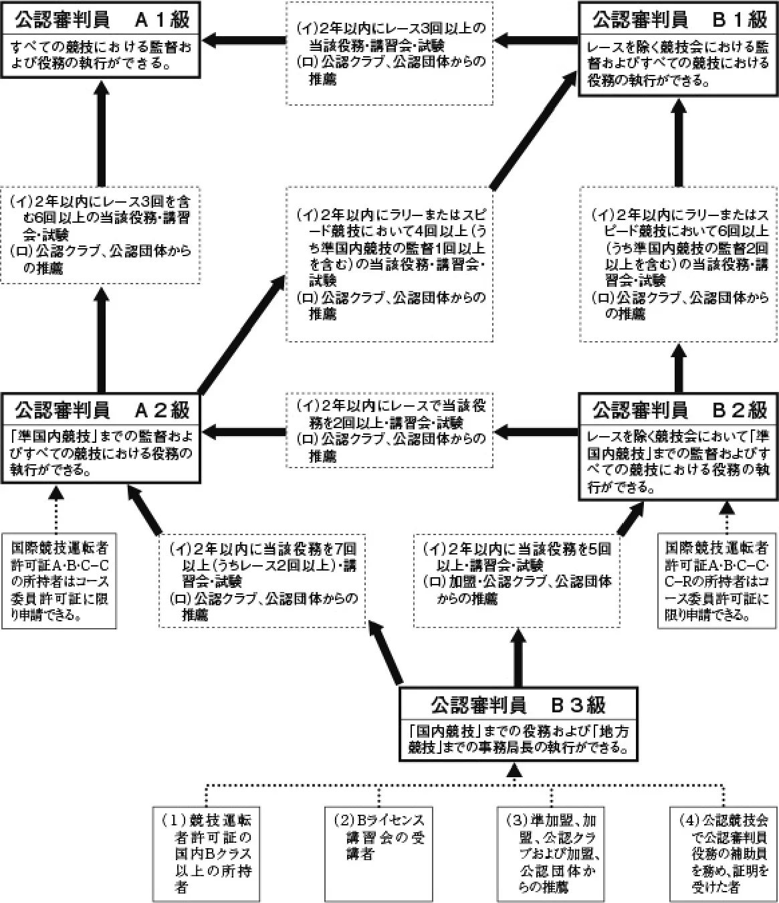
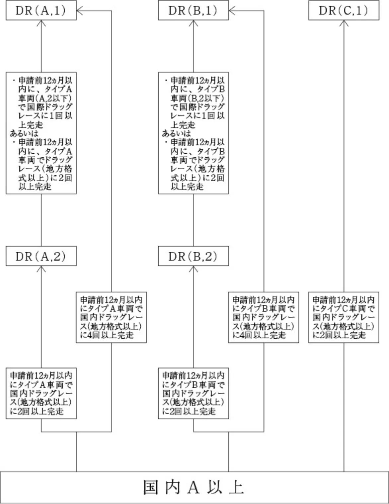

<!doctype html>
<html lang="ja"><head><meta charset="utf-8">
<meta name="viewport" content="width=device-width,initial-scale=1">
<title>JAFスポーツ資格登録規定_20260801</title>
<style>
:root{--fg:#111827;--muted:#6b7280;--line:#e5e7eb;--accent:#1d4ed8;--bg:#fff}
@media (prefers-color-scheme:dark){:root{--fg:#e5e7eb;--muted:#9ca3af;--line:#374151;--accent:#93c5fd;--bg:#0f172a}}
body{margin:0;background:var(--bg);color:var(--fg);font-family:"Noto Sans JP",system-ui,sans-serif;line-height:1.9}
.doc{max-width:46rem;margin:0 auto;padding:2rem 1.25rem 6rem}
h1{font-size:1.6rem;line-height:1.5;margin:0 0 .25rem}
.meta{color:var(--muted);font-size:.8rem;margin-bottom:2rem}
h2,h3,h4,h5{line-height:1.6;margin:2.2em 0 .6em;scroll-margin-top:4rem}
h2{font-size:1.25rem;border-left:4px solid var(--accent);padding-left:.6rem}
h3{font-size:1.1rem}
h4{font-size:1rem;color:var(--accent)}
p{margin:0 0 1em;text-align:justify}
figure{margin:1.8em 0;padding:.75rem;border:1px solid var(--line);border-radius:.5rem}
figure img{display:block;width:100%;height:auto}
figcaption{margin-top:.5rem;font-size:.85rem;color:var(--muted);text-align:center}
.tablewrap{overflow-x:auto;margin:1.5em 0}
table{border-collapse:collapse;font-size:.9rem;min-width:100%}
th,td{border:1px solid var(--line);padding:.35em .6em;vertical-align:top}
.pagemark{float:right;font-size:.7rem;color:var(--muted);user-select:none}
nav.toc{border:1px solid var(--line);border-radius:.5rem;padding:1rem 1.25rem;margin-bottom:2.5rem;font-size:.9rem}
nav.toc ol{list-style:none;margin:0;padding:0}
nav.toc a{color:inherit;text-decoration:none}
nav.toc a:hover{color:var(--accent);text-decoration:underline}
nav.toc .l1{padding-left:0;font-weight:700}
nav.toc .l2{padding-left:1rem}
nav.toc .l3{padding-left:2rem}
nav.toc .l4{padding-left:3rem;color:var(--muted)}
.warn{background:#fef3c7;color:#78350f;border-radius:.4rem;padding:.6rem .9rem;font-size:.85rem;margin-bottom:1.5rem}
.src{border:1px solid var(--line);border-left:3px solid var(--accent);border-radius:.4rem;padding:.6rem .9rem;font-size:.8rem;line-height:1.8;color:var(--muted);margin:0 0 2rem}
.src strong{color:var(--fg)}
.docfoot{margin-top:4rem;padding-top:1rem;border-top:1px solid var(--line);font-size:.78rem;line-height:1.9;color:var(--muted)}
</style>
</head><body><article class="doc">
<h1>JAFスポーツ資格登録規定_20260801</h1>
<p class="meta">2026年 JAF国内競技規則・細則・各種規定 ／ 国内競技規則細則 ／ アップロード日 2026-09-09 ／ 15ページ ／ <a href="https://motorsports.jaf.or.jp/-/media/1/3375/3379/3400/3462/3463/3478/jaf_kitei_shikaku_touroku_20260801-01.pdf" rel="nofollow">JAF 原本 PDF</a></p>
<p class="src"><strong>JAF の公式サイトではありません。</strong>JAF が公開する PDF を自動変換した非公式の検索用アーカイブです。記載内容は必ず <a href="https://motorsports.jaf.or.jp/-/media/1/3375/3379/3400/3462/3463/3478/jaf_kitei_shikaku_touroku_20260801-01.pdf" rel="nofollow">JAF の原本 PDF</a> で出典をご確認ください。</p>
<p class="warn">この文書には自動変換で完全に読み取れなかった箇所があります。</p>
<nav class="toc"><ol>
<li class="l1"><a href="#スポーツ資格登録規定">ＪＡＦスポーツ資格登録規定</a></li>
<li class="l2"><a href="#第-章-総-則">第１章　総　　　則</a></li>
<li class="l2"><a href="#第-章-許可証の種類">第２章　許可証の種類</a></li>
<li class="l4"><a href="#競技許可証">１．競技許可証</a></li>
<li class="l4"><a href="#公認審判員許可証">２．公認審判員許可証</a></li>
<li class="l4"><a href="#エキスパートライセンス">３．エキスパートライセンス</a></li>
<li class="l2"><a href="#第-章-競技許可証">第３章　競技許可証</a></li>
<li class="l4"><a href="#第-条-競技許可証の種類と有効な競技会">第１条　競技許可証の種類と有効な競技会</a></li>
<li class="l4"><a href="#競技許可証の種類は-次の通りとする">１．競技許可証の種類は、次の通りとする。</a></li>
<li class="l4"><a href="#第-条-競技許可証の新規申請">第２条　競技許可証の新規申請</a></li>
<li class="l4"><a href="#競技運転者許可証">１．競技運転者許可証</a></li>
<li class="l4"><a href="#限定国内競技運転者許可証">２．限定国内競技運転者許可証Ａ</a></li>
<li class="l4"><a href="#限定国際ソーラーカー競技運転者許可証">３．限定国際ソーラーカー競技運転者許可証</a></li>
<li class="l4"><a href="#競技参加者許可証">４．競技参加者許可証</a></li>
<li class="l4"><a href="#第-条-競技許可証の上級申請">第３条　競技許可証の上級申請</a></li>
<li class="l4"><a href="#国内-から国内-への申請">１．国内Ｂから国内Ａへの申請：</a></li>
<li class="l4"><a href="#国内-から国際-への申請">２．国内Ａから国際Ｃ－Ｒへの申請：</a></li>
<li class="l4"><a href="#国内-限定-または国際-から国際-への申請">３．国内Ａ、限定Ａまたは国際Ｃ－Ｒから国際Ｃ－Ｃへの申請：</a></li>
<li class="l4"><a href="#国際-への申請">６．国際Ｂへの申請：</a></li>
<li class="l4"><a href="#推薦による申請">７．推薦による申請：</a></li>
<li class="l4"><a href="#第-条-国際ドラッグレース許可証">第４条　国際ドラッグレース許可証</a></li>
<li class="l4"><a href="#許可証の種類">１．許可証の種類：</a></li>
<li class="l4"><a href="#申請条件">２．申請条件：</a></li>
<li class="l4"><a href="#許可証の申請">３．許可証の申請：</a></li>
<li class="l4"><a href="#他のタイプの許可証の共有">４．他のタイプの許可証の共有：</a></li>
<li class="l4"><a href="#推薦による申請-2">５．推薦による申請：</a></li>
<li class="l4"><a href="#国際ドラッグレース許可証料">６．国際ドラッグレース許可証料：</a></li>
<li class="l4"><a href="#補足">７．補足：</a></li>
<li class="l4"><a href="#第-条-競技許可証の有効期間と年度更新申請">第５条　競技許可証の有効期間と年度更新申請</a></li>
<li class="l4"><a href="#第-条-競技許可証の適用を免除される競技会">第６条　競技許可証の適用を免除される競技会</a></li>
<li class="l4"><a href="#第-条-申請手続の代行">第７条 申請手続の代行</a></li>
<li class="l4"><a href="#第-条-競技許可証の申請に際しての要項と発給後の遵守事項">第８条　競技許可証の申請に際しての要項と発給後の遵守事項</a></li>
<li class="l2"><a href="#第-章-公認審判員許可証">第４章　公認審判員許可証</a></li>
<li class="l4"><a href="#第-条-公認審判員">第９条　公認審判員</a></li>
<li class="l4"><a href="#第10条-公認審判員許可証の分類および有効である競技会">第10条　公認審判員許可証の分類および有効である競技会</a></li>
<li class="l4"><a href="#役務の分類">１．役務の分類</a></li>
<li class="l4"><a href="#第11条-公認審判員許可証の新規申請">第11条　公認審判員許可証の新規申請</a></li>
<li class="l4"><a href="#級への新規申請">１．Ｂ３級への新規申請</a></li>
<li class="l4"><a href="#級への新規申請-2">２．Ｂ２級への新規申請</a></li>
<li class="l4"><a href="#級への新規申請-3">３．Ａ２級への新規申請</a></li>
<li class="l4"><a href="#第-2条-公認審判員許可証の上級申請">第１2条　公認審判員許可証の上級申請</a></li>
<li class="l4"><a href="#級所持者で-級への申請">１．Ｂ３級所持者でＢ２級への申請</a></li>
<li class="l4"><a href="#級所持者で-級への申請-2">２．Ｂ３級所持者でＡ２級への申請</a></li>
<li class="l4"><a href="#級所持者で-級への申請-3">３．Ｂ２級所持者でＢ１級への申請</a></li>
<li class="l4"><a href="#級所持者で-級への申請-4">４．Ｂ２級所持者でＡ２級への申請</a></li>
<li class="l4"><a href="#級所持者で-級への申請-5">５．Ｂ１級所持者でＡ１級への申請</a></li>
<li class="l4"><a href="#級所持者で-級への申請-6">６．Ａ２級所持者でＢ１級への申請</a></li>
<li class="l4"><a href="#級所持者で-級への申請-7">７．Ａ２級所持者でＡ１級への申請</a></li>
<li class="l4"><a href="#第-3条-公認審判員許可証の有効期間と年度更新申請">第１3条　公認審判員許可証の有効期間と年度更新申請</a></li>
<li class="l4"><a href="#第-4条-資格の停止および取り消し">第１4条　資格の停止および取り消し</a></li>
<li class="l4"><a href="#参照">１１－１１、１１－１３参照）</a></li>
<li class="l2"><a href="#第-章-エキスパート・ライセンス">第５章　エキスパート・ライセンス</a></li>
<li class="l4"><a href="#第-5条-資格権限">第１5条　資格権限</a></li>
<li class="l4"><a href="#大会審査委員長に指名される資格を有する">２．大会審査委員長に指名される資格を有する。</a></li>
<li class="l4"><a href="#講習会主任講師に指名される資格を有する">３．講習会主任講師に指名される資格を有する。</a></li>
<li class="l4"><a href="#の特認事項に関し適格者として年度登録される">４．ＪＡＦの特認事項に関し適格者として年度登録される。</a></li>
<li class="l4"><a href="#第-6条-資格登録者の義務">第１6条　資格登録者の義務</a></li>
<li class="l4"><a href="#第-7条-新規申請の条件">第１7条　新規申請の条件</a></li>
<li class="l4"><a href="#会員であること">１．ＪＡＦ会員であること。</a></li>
<li class="l4"><a href="#モータースポーツ活動についての-年以上の経験者">３．モータースポーツ活動についての３０年以上の経験者。</a></li>
<li class="l4"><a href="#第-8条-申請および審査">第１8条　申請および審査</a></li>
<li class="l4"><a href="#第-9条-許可証料">第１9条　許可証料</a></li>
<li class="l2"><a href="#第-章-本規定の施行">第６章　本規定の施行</a></li>
<li class="l4"><a href="#第20条-本規定の施行">第20条　本規定の施行</a></li>
<li class="l1"><a href="#競">競</a></li>
<li class="l1"><a href="#技運転者許可証の取得方法">技運転者許可証の取得方法</a></li>
<li class="l2"><a href="#国際-ライセンス">国際Ｂライセンス</a></li>
<li class="l2"><a href="#国際-ライセンス国際-ライセンス">国際Ｃ－Ｃライセンス国際Ｅライセンス</a></li>
<li class="l2"><a href="#国際-ライセンス-2">国際Ｃ－Ｒライセンス</a></li>
<li class="l2"><a href="#115頁の国際ドライバーライセンスの取得方法による">115頁の国際ドライバーライセンスの取得方法による。</a></li>
<li class="l2"><a href="#特別団体からの推薦国内-ライセンス-すべての国内競技に有効">特別団体からの推薦国内Ａライセンス（すべての国内競技に有効）</a></li>
<li class="l2"><a href="#公認クラブからの推薦">公認クラブからの推薦</a></li>
<li class="l2"><a href="#ライセンス講習会にて合格">Ａライセンス講習会にて合格</a></li>
<li class="l2"><a href="#準加盟クラブ-加盟クラブからの推薦">準加盟クラブ、加盟クラブからの推薦</a></li>
<li class="l2"><a href="#公認競技会に-回以上出場">公認競技会に１回以上出場</a></li>
<li class="l1"><a href="#sec">｛ ｝</a></li>
<li class="l2"><a href="#国内-ライセンス-レースを除く国内競技に有効">国内Ｂライセンス（レースを除く国内競技に有効）</a></li>
<li class="l2"><a href="#クローズド競技会の出場証明-イ">クローズド競技会の出場証明○イ</a></li>
<li class="l2"><a href="#ライセンス講習会の受講-ロ">Ｂライセンス講習会の受講○ロ</a></li>
<li class="l2"><a href="#登録クラブからの推薦-ハ">登録クラブからの推薦○ハ</a></li>
<li class="l2"><a href="#つのコースがある">（３つのコースがある）</a></li>
<li class="l2"><a href="#の会員であること">ＪＡＦの会員であること</a></li>
<li class="l2"><a href="#詳細は-スポーツ資格登録規定を参照取得希望者">詳細はＪＡＦスポーツ資格登録規定を参照取得希望者</a></li>
<li class="l2"><a href="#有効な運転免許証を所持していることが条件">（有効な運転免許証を所持していることが条件）</a></li>
<li class="l1"><a href="#公認審判員許可証-・-公認審判員許可証">「公認審判員許可証Ｂ」・「公認審判員許可証Ａ」</a></li>
<li class="l1"><a href="#の取得方法および役務執行権限">の取得方法および役務執行権限</a></li>
<li class="l1"><a href="#国際ドラッグレースライセンスの取得方法">国際ドラッグレースライセンスの取得方法</a></li>
</ol></nav>
<h2 id="スポーツ資格登録規定"><span class="pagemark" id="p1">P.1</span>ＪＡＦスポーツ資格登録規定</h2>
<p>１９７７年　９月２７日制　　　　定１９７８年　９月２７日改　　　　定１９８０年１２月　２日改　　　　定１９８１年　７月２２日改　　　　定１９８２年１１月２４日改　　　　定１９８３年　２月１７日改　　　　定１９８４年　２月１６日改　　　　定１９８４年　７月１８日改　　　　定１９９０年　１月　１日改　　　　定１９９０年１０月２３日改　　　　定１９９３年１０月２０日改　　　　定１９９３年１２月　２日施　　　　行１９９４年１０月１３日改　　　　定１９９５年　４月　１日施　　　　行１９９５年１０月　５日改　　　　定１９９６年　１月　１日施　　　　行１９９６年１２月　３日改定施行１９９７年１０月２３日改　　　　定１９９７年１１月２７日改　　　　定</p>
<p>１９９８年　１月　１日施　　　　行１９９８年　７月２７日改　　　　定１９９９年　１月　１日施　　　　行１９９９年　７月２８日改　　　　正１９９９年１０月２２日改　　　　正２０００年　３月２８日改　　　　正２０００年　４月　１日施　　　　行２０００年　８月　１日改正施行２０００年１０月２６日改　　　　正２０００年１１月　１日施　　　　行２００１年　１月　１日施　　　　行２００１年　３月３０日改　　　　正２００１年　５月　１日施　　　　行２００１年１０月１９日改　　　　正２００１年１１月　１日施　　　　行２００２年　７月３１日改　　　　正２００３年　１月　１日施　　　　行２００４年　８月　３日改　　　　正２００４年１０月　１日施　　　　行</p>
<p>２００５年　８月　２日改　　　　正２００５年１１月　１日施　　　　行２００６年　８月　６日改　　　　正２００６年１１月　１日施　　　　行２００６年１１月３０日改正施行２００８年１１月２７日改正施行２０１１年　１月　１日改正施行２０１１年１１月２４日改　　　　正２０１２年　４月　１日施　　　　行２０１２年１１月２９日改　　　　正２０１３年　１月　１日施　　　　行２０１４年　１月３０日改　　　　正２０１４年　４月　１日施　　　　行２０１４年１１月２７日改　　　　正２０１４年１２月　１日施　　　　行２０１５年　７月３０日改　　　　正２０１５年１１月　１日施　　　　行２０１７年　７月２７日改　　　　正２０１７年１１月　１日施　　　　行</p>
<p>２０１８年　７月２５日改　　　　正２０１９年　１月　１日施　　　　行２０２１年　８月１１日改　　　　正２０２２年　１月　１日施　　　　行２０２２年　３月２８日改　　　　正２０２２年　４月　１日施　　　　行２０２２年　８月　２日改　　　　正２０２２年１１月　１日施　　　　行２０２２年１１月３０日改　　　　正２０２３年　３月　１日施　　　　行２０２4年　7月26日改　　　　正２０２4年　8月　１日施　　　　行２０25年 4月 1日改正施行２０２6年　3月11日改　　　　正2026年　5月　1日施　　　　行２０２6年　7月23日改　　　　正2026年　8月　1日施　　　　行</p>
<h3 id="第-章-総-則">第１章　総　　　則</h3>
<p>一般社団法人日本自動車連盟（以下「ＪＡＦ」という。）は、自動車競技に参加する参加者および運転者ならびに審判員のために国際自動車連盟（以下「ＦＩＡ」という。）の国際モータースポーツ競技規則およびＪＡＦの国内競技規則に準拠してＪＡＦスポーツ資格登録規定を定め、許可証を発給する。</p>
<p>本規定に基づき許可証の発給を受ける者は、その許可証の効力を有する期間においてＪＡＦの個人会員でなければならない。ただし、本規定に基づき満１８歳未満の者が許可証の取得を認められる場合は、この限りではない。</p>
<p>なお、国際競技運転者許可証の発給を受ける者は、ＦＩＡ国際モータースポーツ競技規則およびその付則Ｌ項に従うものとする。</p>
<h3 id="第-章-許可証の種類">第２章　許可証の種類</h3>
<p>ＪＡＦは、次の許可証を本規定に従って発給する。</p>
<h5 id="競技許可証">１．競技許可証</h5>
<h5 id="公認審判員許可証">２．公認審判員許可証</h5>
<h5 id="エキスパートライセンス">３．エキスパートライセンス</h5>
<h3 id="第-章-競技許可証">第３章　競技許可証</h3>
<h5 id="第-条-競技許可証の種類と有効な競技会">第１条　競技許可証の種類と有効な競技会</h5>
<h5 id="競技許可証の種類は-次の通りとする">１．競技許可証の種類は、次の通りとする。</h5>
<p>１）国際許可証</p>
<p>（１）国際競技運転者許可証（Ａ、Ｂ、Ｃ−Ｃ、Ｃ−Ｒ、ドラッグレース、ソーラーカー）</p>
<p>（２）国際競技参加者許可証</p>
<p>２）国内許可証</p>
<p>（１）国内競技運転者（兼参加者）許可証（Ａ、Ｂ）</p>
<p>（２）限定国内競技運転者許可証Ａ</p>
<p>（３）国内競技参加者許可証</p>
<p>なお、許可証上の所持者名は、国際許可証の場合はローマ字を用い、国内許可証の場合はカタカナ、またはローマ字を用いる。</p>
<p>また、競技運転者許可証について、国内競技規則８−１１により仮名の使用が認められた場合でも、本名を併記しなければならない。</p>
<p><span class="pagemark" id="p2">P.2</span>２．競技許可証ごとに有効な競技は、別に定める場合を除き、次の通りとする。</p>
<p>なお、競技運転者許可証の等級は、国際スーパーライセンス（ＦＩＡが発行する）を最上位とし、以下、国際Ａ、Ｂ、Ｃ−Ｃ、Ｃ−Ｒ、国内Ａ、Ｂの順とし、上位の許可証は下位の許可証が有効なすべての競技に有効である。</p>
<p>１）国際競技運転者許可証</p>
<div class="tablewrap"><table><tr><td>許可証の種類</td><td>有効な競技（ＦＩＡによる分類）</td></tr><tr><td>スーパーライセンス</td><td>Ｆ１世界選手権</td></tr><tr><td>Ａ</td><td>パワーウェイトレシオが１kg／hp以下のすべての車両に必要。</td></tr><tr><td>Ｂ</td><td>パワーウェイトレシオが１kg～２kg／hp間のすべての車両に必要。</td></tr><tr><td>Ｃ－Ｃ</td><td>パワーウェイトレシオが２kg／hpを超えるすべてのサーキットカー、およびＦＩＡオートクロ
ス、ラリークロス、トラック選手権に必要。</td></tr><tr><td>Ｃ－Ｒ</td><td>パワーウェイトレシオが３kg／hpを超えるすべてのロードカー、および国際格式のラリー、ク
ロスカントリー、ヒルクライムに必要。</td></tr><tr><td>ドラッグレース</td><td>国際格式のドラッグレース（参加できる車両タイプごとに５種類の許可証がある。本規定第４条
参照）</td></tr></table></div>
<p>２）国際競技参加者許可証</p>
<p>ＦＩＡ国際スポーツカレンダーに登録された競技会およびＪＡＦ公認の国内格式以下の競技会に競技参加者として有効である。</p>
<p>３）国内競技運転者許可証</p>
<p>Ａ：ＪＡＦ公認の国内格式以下の競技会に競技運転者および競技参加者として有効である。</p>
<p>Ｂ：レースを除くＪＡＦ公認の国内格式以下の競技会に競技運転者および競技参加者として有効である。</p>
<p>４）限定国内競技運転者許可証A</p>
<p>本規定第２条２．項に定めるJAF公認の国内格式以下のレース競技会に競技運転者として有効である。</p>
<p>５）国内競技参加者許可証</p>
<p>ＪＡＦ公認の国内格式以下の競技会に競技参加者として有効である。</p>
<p>なお、ＪＡＦ発給の競技運転者許可証の所持者本人が競技運転者としてＪＡＦ公認の国内競技に参加する場合に限り、その競技運転者許可証は競技参加者許可証を兼ねることができるものとする。</p>
<h5 id="第-条-競技許可証の新規申請">第２条　競技許可証の新規申請</h5>
<h5 id="競技運転者許可証">１．競技運転者許可証</h5>
<p>１）新たに競技運転者許可証を申請する者は、日本の普通自動車以上の運転免許証または外国のこれに相当する免許証の所有者でなければならない。</p>
<p>ただし、本規定に基づき満１８歳未満の者が許可証の取得を認められる場合は、この限りではない。</p>
<p>何らかの障がい者手帳を持つ者は、許可証を取得する適性についてＪＡＦの審査を受け、承認を得なければならない。</p>
<p>２）上記１）の要件を満たし、かつ次の（１）〜（６）のいずれかの条件を満たしたものは、各項に定める国内競技運転者許可証の新規申請を行うことができる。</p>
<p>（１）クローズド競技参加によるもの。</p>
<p>ＪＡＦ登録クラブが開催するスピード競技またはラリーのクローズド競技会に１回以上出場した者：</p>
<p>・国内Ｂを申請することができる。</p>
<p>ただし申請の際に当該クラブの代表者の証明を必要とする。</p>
<p>（２）ＪＡＦ認定の講習会の受講によるもの。</p>
<p>①「Ｂライセンス講習会」を受講した者：</p>
<p>・国内Ｂを申請することができる。</p>
<p>②講習会開設規定第１９条２．または４．の受講資格を満たし、「国内Ａライセンス講習会」を受講し合格した者：</p>
<p>・国内Ａを申請することができる。</p>
<p><span class="pagemark" id="p3">P.3</span>（３）推薦によるもの。</p>
<p>①ＪＡＦ準加盟、加盟、公認クラブおよび特別団体の代表者の推薦を受けた者：</p>
<p>・国内Ｂを申請することができる。</p>
<p>②ＪＡＦ公認クラブおよび特別団体の代表者の推薦を受けた者：</p>
<p>・国内Ａ以上を申請することができる。</p>
<p>ただし国際競技運転者許可証については、ＪＡＦで審査を受け、承認された者でなければ発給されない。</p>
<p>（４）ＣＩＫ－ＦＩＡカート国際ドライバーライセンスＥの所持者は、同一年または翌年の競技運転者許可証国内Ａ以下の許可証を申請できる。</p>
<p>（５）申請の前年、または前々年にカートのＣＩＫ世界選手権、あるいはＣＩＫワールドカップの最終認定順位（シリーズランキング）にて３位以内の者は、競技運転者許可証国際Ｂ以下の許可証を申請できる。</p>
<p>（６）限定国際ソーラーカー競技運転者許可証、またはカート国内Ａライセンスの所持者は、同一年または翌年の競技運転者許可証国内Ｂの許可証を申請できる。</p>
<p>ＪＡＦは申請に基づき、審査のうえ当該申請者に対し、所定の自動車競技運転者許可証の発給を行うこととする。</p>
<p>以上のいずれかの条件を満たした者は、申請時に「健康管理事項」を確認の上で必要事項と写真１枚をＪＡ Ｆに申請するものとする。</p>
<p>なお、上記（１）〜（３）の条件を満たした者の申請については、申請資格取得後３０日以内に申請しなければならない。</p>
<p>３）国際競技運転者許可証の新規申請を行う者は、ライセンスの種別ごとに定められている、ＦＩＡｅラーニングによる安全講習を受けなければならない。</p>
<p>４）本規定第３条５に定める国際Ｃ－Ｃ（Ｃ－Ｒ除外）および限定国内競技運転者許可証Ａの新規申請を行う者は、ＪＡＦの指定する安全講習を受けなければならない。</p>
<h5 id="限定国内競技運転者許可証">２．限定国内競技運転者許可証Ａ</h5>
<p>１）満１５歳に達した後初めて迎える４月１日から満１８歳に達する日まで、次の（１）、（２）および（３）の条件を満たす者は、フォーミュラ車両または、ＪＡＦが特に認めたフォーミュラ車両に準ずる車両によるＪＡＦ公認の国内格式以下の競技会のレースのみに参加できる限定国内競技運転者許可証Ａ（以下「限定Ａライセンス」という。）を申請することができる。</p>
<p>（１）限定Ａライセンスを取得しようとする者は、申請するライセンス有効年の前年または前々年に、次のいずれか１つ以上の実績を満たしていること。</p>
<p>①全日本カート選手権において、年間総合順位６位以内に入賞</p>
<p>ただし、ＦＰ－３部門は、年間総合順位２位以内に入賞とする。</p>
<p>②日本国内において開催された国際格式のカート競技会において、６位以内に入賞</p>
<p>③国内外を問わず、ＣＩＫ－ＦＩＡのタイトルのかけられた国際格式のカート競技会において、６位以内に入賞</p>
<p>（２）ＪＡＦ認定のＡライセンス講習会の座学を受講し、かつその学科試験に合格すること。</p>
<p>（３）限定Ａライセンス取得に関する親権者の同意を得ること。</p>
<p>２）限定Ａライセンスを取得しようとする者は、申請時に「健康管理事項」を確認の上で下記（１）の証明を取り付けた上、下記（２）から（４）をＪＡＦに申請すること。</p>
<p>（１）ＪＡＦ認定のＡライセンス講習会受講および学科試験合格証明（上記の所定の申請書に講習会の証印押印の欄がある）。</p>
<p>（２）前項（１）の実績を証明する書類</p>
<p>（３）限定Ａライセンス取得に関する親権者が自署・捺印した同意書、親権者であることを証する書類（公的な書類）および印鑑証明</p>
<p>（４）写真１枚</p>
<p>３）限定Ａライセンスの有効期間は発給された年の１２月３１日までとし、その許可証料は国内競技運転者許可証Ａの許可証料と同一とする。</p>
<p>４）限定Ａライセンスは競技参加者許可証を兼ねないものとする。限定Ａライセンスを所持する者は、競技参加者許可証を所持するクラブ・団体または法人（以下「チーム」という。）に所属し、そのチームが参加する１）項のレースに当該チームの競技運転者として参加すること。</p>
<p>５）限定Ａライセンスを所持する者が満１８歳に達した後の取扱いは、以下の通りとする。</p>
<p><span class="pagemark" id="p4">P.4</span>（１）限定Ａライセンスを年度更新することにより、満１９歳に達する年の限定Ａライセンスを取得することができる。</p>
<p>（２）満１９歳に達するまでに、普通自動車運転免許証を取得し、ＪＡＦ個人会員となることにより、限定Ａライセンスから国内競技運転者許可証Ａへの移行申請（以下「移行申請」という。）を行うことができる。</p>
<p>もし、上記期限までに手続しない場合は、移行申請の資格を失う。</p>
<p>（３）移行申請により、所持する限定Ａライセンスと同一年の国内競技運転者許可証Ａを取得する場合は、新たな許可証料の支払を必要としないが、翌年の国内競技運転者許可証Ａを取得する場合は、国内競技運転者許可証Ａの許可証料の支払を必要とする。</p>
<p>６）限定Ａライセンスによる出場実績は、国際競技運転者許可証への上級申請時の実績とする。</p>
<p>７）ＪＡＦ登録クラブまたは登録団体からの推薦による限定Ａライセンスの取得申請は認められない。</p>
<h5 id="限定国際ソーラーカー競技運転者許可証">３．限定国際ソーラーカー競技運転者許可証</h5>
<p>１）本規定においてソーラーカーとは、車両に搭載したソーラーパネルから蓄電池を介し直接的に駆動力を得る競技用車両をいう。</p>
<p>２）次の（１）または（２）の条件を満たす者は、クローズドコースにおいて開催されるＪＡＦ公認のソーラーカー競技（国際格式以下）にのみ参加できる、限定国際ソーラーカー競技運転者許可証（以下「国際ソーラーカーライセンス」という。）を申請することができる。</p>
<p>（１）満１６歳以上でＪＡＦ認定の国際ソーラーカーライセンス講習会を受講し、かつ筆記試験に合格した者</p>
<p>（２）国内競技運転者許可証Ａの所持者</p>
<p>３）国内競技運転者許可証ＢまたはＡの所持者が、国際ソーラーカーライセンスを取得する場合は、既に所持する許可証と併せて所持することができる。</p>
<p>４）国際ソーラーカーライセンスを取得しようとする者は、申請時に「健康管理事項」を確認の上で下記（１）から</p>
<p>（２）をＪＡＦに申請すること。</p>
<p>（１）ＪＡＦ認定の国際ソーラーカーライセンス講習会受講および筆記試験合格証明（上記の所定の申請書に講習会の証印押印の欄がある）、または所持する国内競技運転者許可証Ａ。</p>
<p>（２）写真１枚</p>
<p>なお、満１６歳以上１８歳未満の者が国際ソーラーカーライセンスを取得しようとする場合は、上記（１）から</p>
<p>（２）までの書類の他に、国際ソーラーカーライセンス取得に関する親権者の自筆による同意書、および印鑑証明を添付して申請すること。</p>
<p>５）国際ソーラーカーライセンスの有効期限は発給された年の１２月３１日までとし、その許可証料は国際競技運転者許可証Ｃ−Ｃの許可証料と同一とする。</p>
<p>６）国際ソーラーカーライセンスは競技参加者許可証を兼ねないものとする。</p>
<p>国際ソーラーカーライセンスを所持する者は、競技参加者許可証を所持するクラブ・団体または法人（以下「チーム」という。）、もしくは個人に所属し、そのチームもしくは個人が参加するソーラーカー競技に当該チームの競技運転者として参加すること。</p>
<p>７）国際ソーラーカーライセンスを所持する満１６歳以上１８歳未満の者が満１８歳または１９歳に達する年の取扱いは、以下の通りとする。</p>
<p>（１）国際ソーラーカーライセンスを年度更新することにより、満１８歳に達する年の国際ソーラーカーライセンスを取得することができる。</p>
<p>（２）満１９歳に達する年の国際ソーラーカーライセンスを取得する場合は、年度更新に際してＪＡＦ個人会員となること。</p>
<p>８）国際ソーラーカーライセンスによるソーラーカー競技会への出場実績が無くても、年度更新することにより、国際ソーラーカーライセンスを所持することができる。</p>
<p>９）ＪＡＦ登録クラブまたは登録団体からの推薦による国際ソーラーカーライセンスの取得申請は認められない。</p>
<h5 id="競技参加者許可証">４．競技参加者許可証</h5>
<p>　国内または国際の競技参加者許可証は、満18歳以上の個人、法人、クラブまたは団体名で申請し、交付を受けることができる。</p>
<p>ただし、法人、クラブまたは団体の場合は、そのしかるべき責任者の名前によって申請しなければならない。</p>
<h5 id="第-条-競技許可証の上級申請">第３条　競技許可証の上級申請</h5>
<p>競技許可証の上級申請は、次の条件を満たした者でなければならない。</p>
<p><span class="pagemark" id="p5">P.5</span>何らかの障がい者手帳を持つ者は、許可証を取得する適性についてＪＡＦの審査を受け、承認を得なければならない。</p>
<p>　なお、上級申請条件として規定されている「競技会出場実績」とは、そのつど競技長により成績（順位）認定された記録をいう。（リタイア、ミスコース等は実績として認められない。）</p>
<p>注）「日本選手権」とは、ＪＡＦの全日本選手権または地方選手権をさす。</p>
<h5 id="国内-から国内-への申請">１．国内Ｂから国内Ａへの申請：</h5>
<p>Ａライセンス講習会受講前２４ヵ月以内に次のａ．〜ｃ．のいずれかの実績を有し、同講習会を受講し、合格した者。</p>
<p>ａ．ＪＡＦ公認競技会（クローズドを除く）に１回以上出場</p>
<p>ｂ．ＪＡＦ公認のレーシングコースにおいて２５分以上のスポーツ走行の経験（走行したコースからの走行証明を所持していること）</p>
<p>ｃ．ＪＡＦ公認ソーラーカーレースに出場</p>
<h5 id="国内-から国際-への申請">２．国内Ａから国際Ｃ－Ｒへの申請：</h5>
<p>国内Ａの所持者で、申請前２４ヵ月以内にＪＡＦ公認競技に１０回以上、そのうちラリー、ヒルクライム競技に５回以上の出場実績がある者。</p>
<h5 id="国内-限定-または国際-から国際-への申請">３．国内Ａ、限定Ａまたは国際Ｃ－Ｒから国際Ｃ－Ｃへの申請：</h5>
<p>国内Ａ、限定Ａまたは国際Ｃ－Ｒの所持者で、申請前２４ヵ月以内にＪＡＦ公認競技に１０回以上、そのうちレースに５回以上の出場実績がある者。</p>
<p>（ドラッグレーシング競技に対する国際競技運転者許可証の上級申請については別途に定める。）</p>
<p>４．ＣＩＫ－ＦＩＡカート国際ドライバーライセンスＥから国際Ｃ－Ｃへの申請：</p>
<p>ＣＩＫ－ＦＩＡカート国際ドライバーライセンスＥの所持者で、申請前２４ヵ月以内にＪＡＦ公認カート競技に１０回以上の出場実績がある者。</p>
<p>５．年齢が満１６歳以上満１８歳未満で、上記３．に定める申請条件を満たした者または「ＣＩＫ－ＦＩＡカート国際ドライバーライセンスＥの所持者で、申請前２４ヵ月以内にＪＡＦ全日本カート選手権競技に１０回以上の出場実績がある者」は、ライセンス取得に関する親権者の同意を得た上、参加できる競技が限定された国際Ｃ－Ｃの申請を可能とするが、取扱いは以下の通りとする。</p>
<p>１）日本国内で開催される競技への参加は、フォーミュラ車両によるレースに限る。また、海外で開催される国際Ｃ －Ｒが有効な競技会への参加は、認められない。</p>
<p>２）競技が限定された国際Ｃ－Ｃを取得しようとする者は、所定の申請に加え、ライセンス取得に関する親権者が自署・捺印した同意書、親権者であることを証する書類（公的な書類）および印鑑証明を提出すること。</p>
<p>３）競技が限定された国際Ｃ－Ｃは競技参加者許可証を兼ねないものとする。競技が限定された国際Ｃ－Ｃを所持する者は、競技参加者許可証を所持するチームに所属し、そのチームが参加するレースに当該チームの競技運転者として参加すること。</p>
<p>４）競技が限定された国際Ｃ－Ｃを所持する者が満１８歳に達した後の取扱いは、以下の通りとする。</p>
<p>（１）競技が限定された国際Ｃ－Ｃを年度更新することにより、満１９歳に達する年の競技が限定された国際Ｃ－Ｃを取得することができる。</p>
<p>（２）満１９歳に達するまでに、普通自動車運転免許証を取得しＪＡＦ個人会員となることにより、競技が限定された国際Ｃ－Ｃから国際Ｃ－Ｃに移行申請を行うことができる。もし、上記期限までに手続きしない場合は、移行申請の資格を失う。</p>
<p>（３）移行申請により、所持する競技が限定された国際Ｃ－Ｃと同一年	の国際Ｃ－Ｃを取得する場合は、新たな許可証料の支払を必要としないが、翌年の国際Ｃ－Ｃを取得する場合は、国際Ｃ－Ｃの許可証料の支払を必要とする。</p>
<p>５）競技が限定された国際Ｃ－Ｃによる出場実績は、国際Ｂおよび国際Ａへの上級申請時の実績とすることができる。</p>
<h5 id="国際-への申請">６．国際Ｂへの申請：</h5>
<p>国際C－Cの所持者で、申請前24力月以内にJAF公認レースに5回以上の出場実績がある者</p>
<h5 id="推薦による申請">７．推薦による申請：</h5>
<p>ＪＡＦ公認クラブおよび特別団体の代表者の推薦を受けた者。</p>
<p>ただし、国際競技運転者許可証については、ＪＡＦで審査を受け、承認された者でなければ発給されない。</p>
<h5 id="第-条-国際ドラッグレース許可証">第４条　国際ドラッグレース許可証</h5>
<p>　国際モータースポーツ競技規則付則Ｌ項第１章９「ドラッグレーシングライセンス」に基づき、下記の通り国際ドラ</p>
<p><span class="pagemark" id="p6">P.6</span>ッグレース許可証（以下“ＤＲ”と略す）を発給する。</p>
<h5 id="許可証の種類">１．許可証の種類：</h5>
<p>下記の通り５種類の許可証を発給する。なお、同一車両カテゴリー（タイプ）に限り上位の許可証は、下位の許可証のすべてに有効である。</p>
<p>１）タイプＡクラス１（Ａ，１）：</p>
<p>車両タイプＡのすべてのクラスに有効。</p>
<p>２）タイプＡクラス２（Ａ，２）：</p>
<p>車両タイプＡのうち、クラス２以下のすべてのクラスに有効。</p>
<p>３）タイプＢクラス１（Ｂ，１）：</p>
<p>車両タイプＢのすべてのクラスに有効。</p>
<p>４）タイプＢクラス２（Ｂ，２）：</p>
<p>車両タイプＢのうち、クラス２以下のすべてのクラスに有効。</p>
<p>５）タイプＣクラス１（Ｃ，１）：</p>
<p>車両タイプＣのすべてのクラスに有効。</p>
<p>（注）車両のタイプ</p>
<div class="tablewrap"><table><tr><th>タイプＡ</th><th>タイプＢ</th><th>タイプＣ</th></tr><tr><td>トップフューエル（ＴＦ）
トップアルコールドラッグスター（ＴＡＤ）
トップガスドラッグスター（ＴＧＤ）等</td><td>ファニーカー（ＦＣ）
トップアルコールファニーカー（ＴＡ／ＦＣ）等</td><td>プロストックカー（ＰＳ）等</td></tr></table></div>
<h5 id="申請条件">２．申請条件：</h5>
<p>国内競技運転者許可証Ａ以上の所持者であること。なお、国際ドラッグレースライセンスは、常に国内Ａライセンス以上のサーキットドライバーズライセンスに追加して発給される（国際ドラッグレースライセンスは単独で発給されない）。</p>
<h5 id="許可証の申請">３．許可証の申請：</h5>
<p>１）国内Ａ以上のライセンスからの取得条件：</p>
<p>（１）ＤＲクラス２への新規申請：</p>
<p>①（Ａ，２）への申請：</p>
<p>当該申請１２ヵ月以内にＪＡＦ公認国内ドラッグレース競技会（地方格式以上）にタイプＡ車両で２回以上完走（成績認定を受ける）した者。</p>
<p>②（Ｂ，２）への申請：</p>
<p>当該申請１２ヵ月以内にＪＡＦ公認国内ドラッグレース競技会（地方格式以上）にタイプＢ車両で２回以上完走（成績認定を受ける）した者。</p>
<p>（２）ＤＲクラス１への新規申請：</p>
<p>①（Ａ，１）への申請：</p>
<p>当該申請１２ヵ月以内にＪＡＦ公認国内ドラッグレース競技会（地方格式以上）にタイプＡ車両で４回以上完走（成績認定を受ける）した者。</p>
<p>②（Ｂ，１）への申請：</p>
<p>当該申請１２ヵ月以内にＪＡＦ公認国内ドラッグレース競技会（地方格式以上）にタイプＢ車両で４回以上完走（成績認定を受ける）した者。</p>
<p>③（Ｃ，１）への申請：</p>
<p>当該申請１２ヵ月以内にＪＡＦ公認国内ドラッグレース競技会（地方格式以上）にタイプＣ車両で２回以上完走（成績認定を受ける）した者。</p>
<p>２）ＤＲクラス２からＤＲクラス１への上級申請：</p>
<p>（１）ＤＲ（Ａ，２）からＤＲ（Ａ，１）への申請：</p>
<p>当該申請１２ヵ月以内に、ＪＡＦ公認国内ドラッグレース競技会（地方格式以上）にタイプＡ車両で２回以上完走（成績認定を受ける）するか、国際格式のドラッグレース競技会にタイプＡ車両（２クラス以下）で１回以上完走（成績認定を受ける）した者。</p>
<p>（２）ＤＲ（Ｂ，２）からＤＲ（Ｂ，１）への申請：</p>
<p>当該申請１２ヵ月以内に、ＪＡＦ公認国内ドラッグレース競技会（地方格式以上）にタイプＢ車両で２回以上完</p>
<p><span class="pagemark" id="p7">P.7</span>走（成績認定を受ける）するか、国際格式のドラッグレース競技会にタイプＢ車両（２クラス以下）で１回以上完走（成績認定を受ける）した者。</p>
<p>注）１．「成績認定を受ける」とは、競技区間のタイム計測を受け競技結果にて競技長から成績認定された者。失格、リタイアの場合は、実績とはみなさない。</p>
<p>２．競技出場の実績はそのつど競技長によって成績認定された記録によって証明される。</p>
<h5 id="他のタイプの許可証の共有">４．他のタイプの許可証の共有：</h5>
<p>個別にライセンスを取得していない限り、他のタイプの車両で出場することはできない。</p>
<p>他のタイプの許可証の併有については、取得を希望するタイプのライセンスに要求される上述の条件を個別に満足すること。</p>
<h5 id="推薦による申請-2">５．推薦による申請：</h5>
<p>ＪＡＦ公認クラブまたは特別団体の代表者の推薦を受け、ＪＡＦ審査の結果承認された者は国際ドラッグレースライセンスを取得できる。</p>
<h5 id="国際ドラッグレース許可証料">６．国際ドラッグレース許可証料：</h5>
<p>国際ドラッグレース許可証料は、国際運転者Ｃ－Ｃの許可証料と同額とする。国内Ａの所持者は現有許可証料との差額とし、国際Ｃ－Ｃ以上の所持者はあらためて許可証料を必要としない。</p>
<p>また、２種目以上を併用する場合もあらためて許可証料を必要としない。</p>
<h5 id="補足">７．補足：</h5>
<p>１）以下の車両については、国内競技会ドラッグレースにおいても、次のライセンスが必要とされる：</p>
<div class="tablewrap"><table><tr><td>車両</td><td>ＴＦ</td><td>ＴＡＤ</td><td>ＦＣ</td><td>ＴＡ／ＦＣ</td><td>ＰＳ</td></tr><tr><td>ライセンス</td><td>国際ドラッグＡ，1</td><td>国内Ａ以上</td><td>国際ドラッグＢ，1</td><td>国内Ａ以上</td><td>国内Ａ以上</td></tr></table></div>
<h5 id="第-条-競技許可証の有効期間と年度更新申請">第５条　競技許可証の有効期間と年度更新申請</h5>
<p>競技許可証の有効期間は、許可証の発行日よりその年度の１２月３１日までとする。（国内競技規則８－５参照）</p>
<p>　ただし、競技運転者許可証の発行日以後に、何らかの障がい者手帳を取得し、自動車の運転に支障を及ぼすおそれのあるものが生じたときは、許可証を所持する適性についてＪＡＦの審査を受け、承認を得なければならない。</p>
<p>　また次年度内に更新手続きを行わない場合はその資格を失う。なお更新手続きは所定の申請書に必要事項を記入し、ＪＡＦ各地方本部あて提出するものとする。</p>
<p>　なお、国際Ａ・Ｂ許可証については国際モータースポーツ競技規則付則Ｌ項に定められている更新の条件にも従うこと。</p>
<h5 id="第-条-競技許可証の適用を免除される競技会">第６条　競技許可証の適用を免除される競技会</h5>
<p>　ＪＡＦの登録クラブが主催し、ＪＡＦに届け出たクローズド競技会（レースを除く）においては、当該クラブの会員証をもって競技許可証に代用することができる。（国内競技規則２－１３および８－１参照）</p>
<h5 id="第-条-申請手続の代行">第７条 申請手続の代行</h5>
<p>　ＪＡＦ登録クラブおよび団体（特別団体を除く）はその所属員のために、またライセンス講習会の主催者はその受講者のために競技許可証、審判員許可証の新規申請または更新申請の手続を代行することができる。</p>
<h5 id="第-条-競技許可証の申請に際しての要項と発給後の遵守事項">第８条　競技許可証の申請に際しての要項と発給後の遵守事項</h5>
<p>１．ＪＡＦは他のＡＳＮによって発給され、かつ有効期間中の競技許可証の所持者に対しては、競技許可証を発給しない。（国内競技規則８－３参照）</p>
<p>他のＡＳＮ発給の競技運転者許可証からＪＡＦの許可証に国際モータースポーツ競技規則に則って切り替える場合、当該ＡＳＮから当該ライセンスを返却した証明を必要とする。（前年度まで認める。）</p>
<p>２．ＪＡＦ発給の競技許可証の所持者は日本国外の競技会に参加する場合は、許可証へのＦＩＡ国際競技規則付則Ｌ項に定める記載をもって、本連盟の事前承認を得たものとする。</p>
<p>３．すべての競技許可証は国内競技規則による資格停止または資格取り消し処分をされた場合、その許可証は、直ちにＪＡＦに返上しなければならない。</p>
<p>４．競技運転者許可証の発給を受けた者は、同時交付される健康管理カードに記載されている「健康管理事項」を遵守</p>
<p><span class="pagemark" id="p8">P.8</span>し、必要事項を記入、署名して許可証と共に携行すること。</p>
<p>５．競技運転者許可証を取得する適性についてＪＡＦの審査を受け、承認を得た障がいのある者は、競技会参加申込時に当該条件についてオーガナイザーに申告しなければならない。</p>
<p>６．競技運転者許可証を取得する適性についてＪＡＦの審査を受け、承認を得た障がいのある者は、ＦＩＡが所管する委員会によって承認された識別のためのユニバーサル・シンボルをオフィシャルに見えるよう、車両の前後及び両側面に掲示しなければならない。当該ロゴの大きさは、車両に表示される識別番号の少なくとも５０％のサイズ（いかな</p>
<p>2の大きさ）とする。</p>
<p>る場合も最低８cm</p>
<p>○ＦＩＡ国際競技運転者許可証の上級申請について</p>
<p>国際Ｃ－Ｃ許可証へ上級申請する場合、申請前２４ヵ月以内の競技会出場実績が義務付けられているが、当該上級申請資格を満たした場合は、当該２４ヵ月以内期間終了から許可証申請事務取扱期間として３０日以内に申請を行うこと。</p>
<p>○競技参加者および運転者許可証料</p>
<p>「競技参加者および運転者許可証料」は、自動車競技に関する申請・登録等手数料規定によるものとする。</p>
<p>（消費税込）</p>
<div class="tablewrap"><table><tr><td>種 別</td><td>区 分</td><td>許可証料</td><td>種 別</td><td>区 分</td><td>許可証料</td></tr><tr><td>国内運転者Ａ
および限定Ａ</td><td>新 規
更 新</td><td>4,100</td><td>国際運転者Ａ</td><td>新 規
更 新</td><td>14,800</td></tr><tr><td></td><td>再発行</td><td>2,100</td><td></td><td>再発行</td><td>7,400</td></tr><tr><td>国内運転者Ｂ</td><td>新 規
更 新</td><td>3,100</td><td>国際運転者Ｂ</td><td>新 規
更 新</td><td>12,700</td></tr><tr><td></td><td>再発行</td><td>1,500</td><td></td><td>再発行</td><td>6,400</td></tr><tr><td>国際参加者</td><td>新 規
更 新</td><td>12,700</td><td>国際運転者Ｃ－Ｃ
およびＣ－Ｒ</td><td>新 規
更 新</td><td>10,500</td></tr><tr><td></td><td>再発行</td><td>6,400</td><td></td><td>再発行</td><td>5,100</td></tr><tr><td>国内参加者</td><td>新 規
更 新</td><td>6,400</td><td></td><td></td><td></td></tr><tr><td></td><td>再発行</td><td>3,100</td><td></td><td></td><td></td></tr></table></div>
<p>※国際Ｃ－Ｒおよび国際ドラッグレースは、国際運転者Ｃ－Ｃの許可証料を適用する。</p>
<p>※同一年度内において上位許可証を取得（上級申請）した場合は、その差額の許可証料を必要とする。（ただし、限定国際ソーラーカーと国内Ａ、または国内Ｂを併有する場合は、それぞれの料金を必要とする。）</p>
<p>※許可証発給後、競技運転者許可証または競技参加者許可証を所持する者の都合により、同一年内にその資格の降格、または名称の変更を行う場合は改めて発給する許可証の再発行料金を必要とする。ただし、戸籍上の氏名変更によるものは、その料金を必要としない。</p>
<p>なお、競技運転者許可証を降格した後に再度上級申請する場合は、所定の申請条件を満たさなければならない。</p>
<h3 id="第-章-公認審判員許可証">第４章　公認審判員許可証</h3>
<h5 id="第-条-公認審判員">第９条　公認審判員</h5>
<p>　ＪＡＦの公認競技会には、国際モータースポーツ競技規則、国内競技規則に精通し、かつ自動車競技に関する総合的知識をもち、判定能力を有し、公平無私である公認審判員が競技の監督および役務を執行するものとする。</p>
<p>　監督とは競技長、副競技長、委員長、事務局長をいい、役務とは監督の指揮下できめられた仕事をすることをいう。判定権をもたない補助員は公認審判員でなくともよい。</p>
<p>なお、公認審判員許可証の取得に際して、申請者に対し普通運転免許証以上所持の有無については問わない。</p>
<h5 id="第10条-公認審判員許可証の分類および有効である競技会">第10条　公認審判員許可証の分類および有効である競技会</h5>
<p>　公認審判員はその役務別に分類され、かつその経験および能力等によって各級に区分される。審判員許可証の分類およびその許可証で執行できる競技役務は次の通りである。ただし、事務局長についてはいずれの分類の審判員許可証でもよい。</p>
<h5 id="役務の分類">１．役務の分類</h5>
<p>「技術委員」許可証：技術委員、車両検査員、補給監察員、</p>
<p><span class="pagemark" id="p9">P.9</span>審判員（ｊｕｄｇｅｓ ｏｆ ｆａｃｔ）</p>
<p>「コース委員」許可証：コース委員、信号員、スタート審判員、</p>
<p>審判員（ｊｕｄｇｅｓ ｏｆ ｆａｃｔ）</p>
<p>「計時委員」許可証：計時委員、スタート合図員、決勝審判員</p>
<p>２．許可証を次の級に区分し競技会の格式別における執行権限を決める</p>
<p>公認審判員許可証　Ｂ：レースを除く競技会においてのみ有効であり下記の執行権限をもつ。ただし、「国内競技」までのレースでは役務に限り執行できる。</p>
<p>Ｂ３級 「国内競技」までの役務および「地方競技」までの事務局長の執行ができる。</p>
<p>Ｂ２級 「準国内競技」までの監督およびすべての競技における役務の執行ができる。</p>
<p>Ｂ１級　すべての競技における監督および役務の執行ができる。</p>
<p>公認審判員許可証　Ａ：レースを含むすべての競技会に有効であり下記の執行権をもつ。</p>
<p>Ａ２級 「準国内競技」までの監督およびすべての競技における役務の執行ができる。</p>
<p>Ａ１級　すべての競技における監督および役務の執行ができる。</p>
<h5 id="第11条-公認審判員許可証の新規申請">第11条　公認審判員許可証の新規申請</h5>
<p>　新たに公認審判員許可証を申請する者は、次の条件のいずれかを満たした者で、申請時に必要事項をＪＡＦに申請するものとする。</p>
<h5 id="級への新規申請">１．Ｂ３級への新規申請</h5>
<p>１）ＪＡＦ競技運転者許可証の所持者。</p>
<p>２）ＪＡＦ認定のＢライセンス講習会を受講した者。</p>
<p>３）ＪＡＦ準加盟、加盟、公認クラブおよび加盟、公認団体の代表者の推薦を受けた者。</p>
<p>４）ＪＡＦ公認競技会において公認審判員役務の補助員を務めた者。</p>
<p>ただし、その競技会主催クラブ代表者の証明を必要とし、申請できる分類は、補助員を務めた役務に限る。</p>
<p>＊ただし、２）、３）、４）の資格を満たした者については資格取得後３０日以内に必要事項と写真１枚をＪＡＦに申請しなければならない。</p>
<h5 id="級への新規申請-2">２．Ｂ２級への新規申請</h5>
<p>１）国際競技運転者許可証（Ａ、Ｂ、Ｃ－Ｃ、Ｃ－Ｒ）の所持者。ただし、コース委員に限る。</p>
<p>２）ＪＡＦ加盟、公認クラブおよび公認団体の代表者の推薦を受けた者。</p>
<p>＊ただし、２）の資格を満たした者については資格取得後３０日以内に必要事項と写真１枚をＪＡＦに申請しなければならない。</p>
<h5 id="級への新規申請-3">３．Ａ２級への新規申請</h5>
<p>１）国際競技運転者許可証Ａ、Ｂ、Ｃ－Ｃの所持者。ただし、コース委員に限る。</p>
<p>２）ＪＡＦ公認クラブおよび公認団体の代表者の推薦を受けた者。</p>
<p>＊ただし、２）の資格を満たした者については資格取得後３０日以内に必要事項と写真１枚をＪＡＦに申請しなければならない。</p>
<h5 id="第-2条-公認審判員許可証の上級申請">第１2条　公認審判員許可証の上級申請</h5>
<p>　公認審判員許可証の上級申請に対する許可証の交付は、次の条件のいずれかを満たしたのちＪＡＦの審査を経て行われる。</p>
<p>「当該役務の執行」には、補助員として行った役務も含むものとする。</p>
<p>なお、スピード競技のクローズド競技において行ったものは、上級のための役務実績とはみなさない。</p>
<p>＊以下それぞれ資格を満たした者については資格取得後３０日以内に必要事項をＪＡＦに申請しなければならない。</p>
<h5 id="級所持者で-級への申請">１．Ｂ３級所持者でＢ２級への申請</h5>
<p>１）Ｂ３級取得後、申請に先立つ２４ヵ月以内にＪＡＦ公認の競技会で５回以上の当該役務の執行を行い、ＪＡＦ認定の講習会（当該役務の講習会）を受講し、所定の試験に合格した者。</p>
<p>２）ＪＡＦ加盟、公認クラブおよび公認団体の代表者の推薦を受けた者。</p>
<h5 id="級所持者で-級への申請-2">２．Ｂ３級所持者でＡ２級への申請</h5>
<p>１）Ｂ３級取得後、申請に先立つ２４ヵ月以内にＪＡＦ公認の競技会で７回以上（うちレース２回以上を含むこと）の当該役務の執行を行い、ＪＡＦ認定の講習会を受講し、所定の試験に合格した者。</p>
<p><span class="pagemark" id="p10">P.10</span>２）ＪＡＦ公認クラブおよび公認団体の代表者の推薦を受けた者。</p>
<h5 id="級所持者で-級への申請-3">３．Ｂ２級所持者でＢ１級への申請</h5>
<p>１）Ｂ２級取得後、申請に先立つ２４ヵ月以内にＪＡＦ公認の競技会でラリーまたはスピード競技において６回以上（うち準国内競技の監督２回以上を含むこと）の当該役務の執行を行い、ＪＡＦ認定の講習会を受講し所定の試験に合格した者。</p>
<p>２）ＪＡＦ公認クラブおよび公認団体の代表者の推薦を受けた者。</p>
<h5 id="級所持者で-級への申請-4">４．Ｂ２級所持者でＡ２級への申請</h5>
<p>１）Ｂ２級取得後、申請に先立つ２４ヵ月以内にＪＡＦ公認の競技会でレース２回以上の当該役務の執行を行い、ＪＡ Ｆ認定の講習会（当該役務の講習会）を受講し、所定の試験に合格した者。</p>
<p>２）ＪＡＦ公認クラブおよび公認団体の代表者の推薦を受けた者。</p>
<h5 id="級所持者で-級への申請-5">５．Ｂ１級所持者でＡ１級への申請</h5>
<p>１）Ｂ１級取得後、申請に先立つ２４ヵ月以内にＪＡＦ公認の競技会でレース３回以上の当該役務の執行を行い、ＪＡ Ｆ認定の講習会（当該役務の講習会）を受講し所定の試験に合格した者。</p>
<p>２）ＪＡＦ公認クラブおよび公認団体の代表者の推薦を受けた者。</p>
<h5 id="級所持者で-級への申請-6">６．Ａ２級所持者でＢ１級への申請</h5>
<p>１）Ａ２級取得後、申請に先立つ２４ヵ月以内にＪＡＦ公認の競技会でラリーまたはスピード競技において４回以上（うち準国内競技の監督１回以上を含むこと）の当該役務の執行を行い、ＪＡＦ認定の講習会を受講し、所定の試験に合格した者。</p>
<p>２）ＪＡＦ公認クラブおよび公認団体の代表者の推薦を受けた者。</p>
<h5 id="級所持者で-級への申請-7">７．Ａ２級所持者でＡ１級への申請</h5>
<p>１）Ａ２級所持者でＡ１級へ申請する者は、Ａ２級取得後、申請に先立つ２４ヵ月以内にＪＡＦ公認の競技会でレース３回を含む６回以上の当該役務の執行を行い、ＪＡＦ認定の講習会を受講し所定の試験に合格した者。</p>
<p>２）ＪＡＦ公認クラブおよび公認団体の代表者の推薦を受けた者。</p>
<p>８．監督または役務の執行を行った証明は、その都度、競技会の事務局長が認定した記録等によって証明される。</p>
<p>※本項の「申請に先立つ２４ヵ月以内」とは、ＪＡＦ認定の講習会を受講し合格した日から遡る最大２４ヵ月以内の期間を指す。</p>
<h5 id="第-3条-公認審判員許可証の有効期間と年度更新申請">第１3条　公認審判員許可証の有効期間と年度更新申請</h5>
<p>公認審判員許可証の有効期間は、許可証の発行日よりその年度の１２月３１日までとする。</p>
<p>なお、更新手続きは必要事項をＪＡＦに申請するものとする。</p>
<h5 id="第-4条-資格の停止および取り消し">第１4条　資格の停止および取り消し</h5>
<p>　公認審判員の重大な規則違反、またはＪＡＦおよび自動車スポーツ一般の利益を阻害するような行為があった場合、モータースポーツ審査委員会によって資格停止および資格取り消しの処分に付することがある。（国内競技規則１１－１、</p>
<h5 id="参照">１１－１１、１１－１３参照）</h5>
<p>○公認審判員許可証料</p>
<p>「公認審判員許可証ＡおよびＢの許可証料」は、自動車競技に関する申請・登録等手数料規定によるものとする。</p>
<p>（消費税込）</p>
<div class="tablewrap"><table><tr><td>種 別</td><td>区 分</td><td>許可証料</td></tr><tr><td>審判員１級</td><td>新規
更新</td><td>5,100</td></tr><tr><td></td><td>再発行</td><td>2,600</td></tr><tr><td>審判員２級</td><td>新規
更新</td><td>4,100</td></tr><tr><td></td><td>再発行</td><td>2,100</td></tr><tr><td>審判員３級</td><td>新規
更新</td><td>3,100</td></tr><tr><td></td><td>再発行</td><td>1,500</td></tr></table></div>
<p>ただし、次の場合は別途手数料を必要とする。</p>
<p><span class="pagemark" id="p11">P.11</span>○同一年度内において上位クラスを取得した場合……その差額とする。</p>
<p>○公認審判員許可証を２種目以上併有の場合……最上級の許可証料を基本として計算し、２種目めより１種目につき５００円（消費税込）を加算する。</p>
<h3 id="第-章-エキスパート・ライセンス">第５章　エキスパート・ライセンス</h3>
<p>　モータースポーツ競技の普及、指導、運営にあたる有識者に対し、ＪＡＦはモータースポーツ審議会に諮り、審査の上で「エキスパート・ライセンス」を発給する。</p>
<h5 id="第-5条-資格権限">第１5条　資格権限</h5>
<p>１．国内で有効なすべてのスポーツ資格登録許可証の資格権限を有する。</p>
<h5 id="大会審査委員長に指名される資格を有する">２．大会審査委員長に指名される資格を有する。</h5>
<h5 id="講習会主任講師に指名される資格を有する">３．講習会主任講師に指名される資格を有する。</h5>
<h5 id="の特認事項に関し適格者として年度登録される">４．ＪＡＦの特認事項に関し適格者として年度登録される。</h5>
<p>５．ＪＡＦの委嘱があった場合、国内で開催される公認競技会を査察し、現況を報告できる。</p>
<h5 id="第-6条-資格登録者の義務">第１6条　資格登録者の義務</h5>
<p>１．本資格審査は年度毎に、所定の時期に行われ、資格を認められた者は年次登録を行うものとする。</p>
<p>継続して登録する者は更新手続きを行う。</p>
<p>１年以上登録をしなかった場合は再度審査を必要とする。</p>
<p>２．本資格登録者は、年度に有効な国内諸規則に精通するとともに、競技会、講習会において模範的な運用に努力しなければならない。</p>
<p>３．本資格登録者は、ＪＡＦから要請を受けた場合、国内モータースポーツに関する提言を行う。</p>
<h5 id="第-7条-新規申請の条件">第１7条　新規申請の条件</h5>
<h5 id="会員であること">１．ＪＡＦ会員であること。</h5>
<p>２．ＪＡＦ競技運転者許可証国内Ａ以上の所持者または公認審判員許可証１級以上の所持者。</p>
<h5 id="モータースポーツ活動についての-年以上の経験者">３．モータースポーツ活動についての３０年以上の経験者。</h5>
<p>４．後進の指導・育成、地域での貢献等、モータースポーツ全般に貢献してきた者で、本資格登録の審査に充分な自らの活動実績を提出できること。</p>
<h5 id="第-8条-申請および審査">第１8条　申請および審査</h5>
<p>本資格登録の新規申請は毎年５月末日までとし、その審査は原則として毎年１回とする。</p>
<p>登録は許可証の発行日よりその年度の１２月３１日まで有効である。</p>
<h5 id="第-9条-許可証料">第１9条　許可証料</h5>
<p>新規登録申請料………３１，９００円（消費税込）</p>
<p>年度更新申請料………１５，８００円（消費税込）</p>
<h3 id="第-章-本規定の施行">第６章　本規定の施行</h3>
<h5 id="第20条-本規定の施行">第20条　本規定の施行</h5>
<p>本規定は、2026年８月１日より施行する。</p>
<p><span class="pagemark" id="p12">P.12</span>競技運転者許可証の有効一覧表　　　　　　　　　　　◎印有効</p>
<p>競技会許可証</p>
<p>国内競技以下の</p>
<div class="tablewrap"><table><tr><td>国際のライセンス種別
に該当するレース</td><td>国際のラリー、
スピード競技</td><td>国内競技以下のレース
（クローズドを含む）</td><td>国内競技以下の
ラリー</td></tr><tr><td>◎</td><td>◎</td><td>◎
（地方競技を除く）</td><td>◎</td></tr><tr><td>──</td><td>◎</td><td>◎</td><td>◎</td></tr><tr><td>──</td><td>──</td><td>◎</td><td>◎</td></tr><tr><td>──</td><td>──</td><td>──</td><td>◎</td></tr></table></div>
<p>ＦＩＡ国際競技許可証</p>
<p>Ｃ－Ｒ</p>
<p>ＪＡＦ国内競技許可証</p>
<p>Ａ</p>
<p>ＪＡＦ国内競技許可証</p>
<p>Ｂ</p>
<p><span class="pagemark" id="p13">P.13</span>コンペティション・ドライバーズ・ライセンス</p>
<h2 id="競">競</h2>
<h2 id="技運転者許可証の取得方法">技運転者許可証の取得方法</h2>
<p>競技許可証（通称ライセンスという。）には、参加者（エントラント）と運転者（ドライバー）用とがあるが、ここでは、その取得について段階が定められているドライバーズライセンスの取得方法を、下記のプロセスチャートによって示す。</p>
<h3 id="国際-ライセンス">国際Ｂライセンス</h3>
<h3 id="国際-ライセンス国際-ライセンス">国際Ｃ－Ｃライセンス国際Ｅライセンス</h3>
<h3 id="国際-ライセンス-2">国際Ｃ－Ｒライセンス</h3>
<h3 id="115頁の国際ドライバーライセンスの取得方法による">115頁の国際ドライバーライセンスの取得方法による。</h3>
<h3 id="特別団体からの推薦国内-ライセンス-すべての国内競技に有効">特別団体からの推薦国内Ａライセンス（すべての国内競技に有効）</h3>
<p>実技を伴う講習でテストに合格すること｛ ｝</p>
<h3 id="公認クラブからの推薦">公認クラブからの推薦</h3>
<h3 id="ライセンス講習会にて合格">Ａライセンス講習会にて合格</h3>
<p>※所定の公認サーキットのスポーツ走行実績があれ</p>
<p>ば直接国内Aライセンス講習会を受講できます。</p>
<p>ラリーまたはスピード競技に１回以上出場した証明を得ること｛ ｝</p>
<h3 id="準加盟クラブ-加盟クラブからの推薦">準加盟クラブ、加盟クラブからの推薦</h3>
<h3 id="公認競技会に-回以上出場">公認競技会に１回以上出場</h3>
<h2 id="sec">｛ ｝</h2>
<h3 id="国内-ライセンス-レースを除く国内競技に有効">国内Ｂライセンス（レースを除く国内競技に有効）</h3>
<p>レースには出場できない。ラリー、スピード競技のみ</p>
<h3 id="クローズド競技会の出場証明-イ">クローズド競技会の出場証明○イ</h3>
<h3 id="ライセンス講習会の受講-ロ">Ｂライセンス講習会の受講○ロ</h3>
<h3 id="登録クラブからの推薦-ハ">登録クラブからの推薦○ハ</h3>
<h3 id="つのコースがある">（３つのコースがある）</h3>
<h3 id="の会員であること">ＪＡＦの会員であること</h3>
<h3 id="詳細は-スポーツ資格登録規定を参照取得希望者">詳細はＪＡＦスポーツ資格登録規定を参照取得希望者</h3>
<h3 id="有効な運転免許証を所持していることが条件">（有効な運転免許証を所持していることが条件）</h3>
<h2 id="公認審判員許可証-・-公認審判員許可証"><span class="pagemark" id="p14">P.14</span>「公認審判員許可証Ｂ」・「公認審判員許可証Ａ」</h2>
<h2 id="の取得方法および役務執行権限">の取得方法および役務執行権限</h2>
<figure></figure>
<h2 id="国際ドラッグレースライセンスの取得方法"><span class="pagemark" id="p15">P.15</span>国際ドラッグレースライセンスの取得方法</h2>
<figure></figure>
<footer class="docfoot">自動変換のため誤りが含まれる可能性があります。競技における判断は必ず <a href="https://motorsports.jaf.or.jp/-/media/1/3375/3379/3400/3462/3463/3478/jaf_kitei_shikaku_touroku_20260801-01.pdf" rel="nofollow">JAF の原本 PDF</a> をご確認ください。<br>原本: JAFスポーツ資格登録規定_20260801（JAF） ／ 自動変換 2026-09-09 ／ パイプライン 0.2.0 ／ <a href="/">検索して読む</a></footer>
</article></body></html>